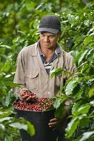
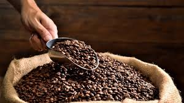
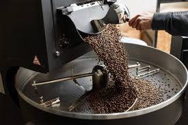
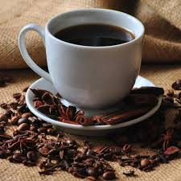

La pasión por el café ha caracterizado a Grano Vivo Selecto desde sus inicios en Cajamarca. La empresa fue fundada en el año 2010 por un grupo de caficultores locales con el propósito de dar a conocer la calidad de los granos cultivados en las alturas cajamarquinas, reconocidas a nivel mundial por producir cafés de aroma y sabor únicos.


Desde el inicio, la compañía apostó por rescatar las tradiciones del cultivo artesanal de la zona, combinándolas con tecnologías modernas de selección, tostado y comercialización. Este enfoque le permitió diferenciarse en el mercado nacional y abrir camino hacia la exportación de cafés especiales con certificaciones de calidad y sostenibilidad.
El compromiso de Grano Vivo Selecto con el medio ambiente y las comunidades cafetaleras ha sido constante, promoviendo prácticas de comercio justo y el cuidado de los ecosistemas. Gracias a esta visión, la empresa se ha consolidado como un referente en Cajamarca y en el Perú, llevando lo mejor del café cajamarquino a consumidores que buscan calidad, tradición e innovación en cada taza.
Ser una empresa líder en la comercialización de café peruano de alta calidad, reconocida a nivel nacional por su innovación digital, excelencia en el servicio y compromiso con el desarrollo sostenible de la caficultura.
Ofrecer a nuestros clientes una experiencia única en la compra y consumo de café, brindando productos selectos y un servicio ágil mediante canales digitales modernos, garantizando calidad, transparencia y confianza, mientras impulsamos el crecimiento de nuestros productores y la satisfacción de nuestros consumidores.

